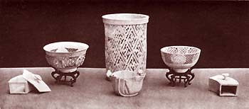
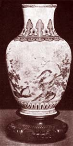
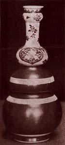

| The Letters of Père
d'Entrecolles II
Being the first detailed accounts on the manufacture of Chinese
porcelain to reach the Occident.
From William Burton's Porcelain, It's Art and Manufacture,
B.T. Batsford, London, 1906.
The second letter is dated from Ching-te-chen itself, on the 25th
of January, 1722, and we translate its essentials:
However much trouble I have taken in informing myself as to the
way in which the Chinese make porcelain, I am far from thinking
that I have entirely exhausted the subject. You will see by the
new observations I send you that fresh researches have given me
fresh knowledge. These observations I will unfold to you without
any order, just as I have put them down on paper as I have had opportunity,
either in going through the workshops and instructing myself with
my own eyes, or by asking different questions of the Christians
who are occupied in the manufacture.
I. As gold on porcelain wears away from time to time and loses
much of its lustre, it may be restored by moistening the porcelain
with clear water, and then rubbing the gilding with an agate, though
one must be careful to rub always in the same direction, say from
right to left.
II. The edges of porcelain pieces are especially subject to chip
off; the Chinese strengthen them so as to obviate this inconvenience
by mixing with, the glaze some bamboo charcoal. They edge the porcelain
pieces with this mixture when they are already dry, putting them
on a wheel for the purpose ; afterwards they put the glaze on the
edge as well as on the rest of the piece, and after firing the edges
are just as white. As Europeans have no bamboo, I think they might
use in its place willow-charcoal, or still better that of elder,
which somewhat approaches bamboo. It must be noted that before the
bamboo is reduced to charcoal, the green skin is removed, because
they say that the ashes of this skin makes the porcelain pieces
burst in the oven. It should also be noted that the workmen must
be careful not to touch the porcelain with greasy or oily hands;
the place that had been touched would crack infallibly in the firing.
III. Speaking of the colours, I mentioned that there are red ones
that are blown (soufflé), and I have explained how to make
this colour, but I do not remember having said that there are blue
soufflé pieces, which are easier to make. No doubt people
will have seen some of these pieces in Europe. Our workpeople agree
that if expense were no object, it would be possible to blow gold
or silver on to the porcelain, such as those that have a black or
blue ground, so as to produce a decoration of gold and silver rain.
This kind of porcelain, which would be in a new style, would surely
please people.
Glaze can be blown in the same way as the red colour. A little while
ago they made for the Emperor pieces that were so thin and fine
that they had to put them on cotton wool, because they had no other
means of handling the pieces without great risk of breaking them.
It was not possible to dip these pieces into the glaze, so the glaze
was blown on, and the pieces entirely coated in this way.
I have noticed that, in blowing the blue colour, the workpeople
are careful to lose as little as possible of the colour. They take
the precaution to place the vase on a pedestal, and under the pedestal
they put a large piece of paper, which can be used for some time.
When the colour that falls on the paper is dry it is gathered together
with a little brush, so that nothing is lost.

IV. They have recently found a fresh material fit to be used in
the composition of porcelain; it is a stone or a species of chalk,
which is called Hua-Shih, which the Chinese doctors also use to
make a draught, which they say is detergent, aperient, and cooling.
The men who work in porcelain have thought of using this stone in
the place of the Kao-lin spoken of in my last letter. It may be
that some place in Europe may be found which supplies this stone
Hua-Shih, even if there is no Kao-lin. It is called by this name
because it is somewhat glutinous, and in a way like soap.* Porcelain
made with Hua-Shih is rare, and is much dearer than the other. It
has an extremely fine grain, and with regard to the work of the
brush, if it be compared with ordinary porcelain, it is like vellum
compared with ordinary paper. Moreover, this porcelain is so light
as to surprise one who has been accustomed to handle other porcelains;
it is also much more fragile than the commoner kind, and it is difficult
to seize the proper moment of its firing. Some do not use Hua-Shih
to make the body, but content themselves with making a kind of thin
glue with it, into which they dip the porcelain when it is dry,
so that it is coated with a layer of this material before it receives
the colour or the glaze, and in this way they obtain a certain degree
of beauty. When the Hua-Shih is mined it is first washed with water
to clear away the yellowish clay with which it is coated, and it
is then prepared in the same way as Kao-lin. I am assured that porcelain
can be made of these substances alone without any addition, but
one of my converts, who has made this porcelain, tells me that he
mixed eight parts of Hua-Shin with two parts of Pe-tun-tse. I have
also been told that if they were to put more, than two parts of
Pe-tun-tse and eight parts of Hua-Shih, the porcelain would sink
in the fire because it would not be firm enough. It is five times
the price of Kao-lin, so that this kind of porcelain must be dearer
than the common kind. They can also trace designs with this material,
using it as a slip to paint upon the porcelain pieces, and when
the painting is dry the pieces are glazed. After firing, the designs
are of a whiteness different to that of the porcelain itself; it
seems like a thin vapour spread over the surface. The white of this
Hua-Shih is known as ivory white.*
V. Designs are also painted on porcelain with Shih-kao; t as well
as with Hua-Shih, which gives another cast to it ; but the Shih-kao
has this peculiarity, that before it is prepared it has to be roasted
in the oven, and after that it is treated in the same way as Hua-Shih
or Kao-lin. This Shih-kao cannot be used to make the body of porcelain,
and up to now they have only found the material Hua-Shih that can
take the place of Kao-lin, and give firmness to the porcelain.
VI. I have not spoken of a kind of glaze called Tauchin, that is,
burnished-gold glaze. I should be more inclined to call it bronze,
coffee-coloured or dead-leaf coloured glaze. This glaze is a new
invention.+ To make it they take common yellow clay and give it
the same treatment as Pe-tun-tse, and then they use it in a liquid
state like ordinary glaze. This fluid yellow clay is first mixed
with powdered Pe-tun-tse and some of the ashes of lime and fern.
The proportions of these ingredients are varied according as they
intend the colour to be darker or lighter. They tried to make a
mixture of gold-leaf with glaze and powdered flint, which they applied
in the same way as the red glaze, but this experiment was unsuccessful,
and they have found that the burnished-gold glaze just mentioned
is more elegant and more brilliant. There was a time when they made
cups that had a golden glaze outside, with the purest white glaze
inside; since then they have adopted another method, and on the
cup or vase that they intend to glaze with this burnished-gold glaze,
they attach to the vases in one or two places, shaped pieces of
moistened paper, and after the brown coating is applied, the paper
is taken off and the reserved white panels are painted with a design
in red or blue colour. When the piece is dry it is coated with the
ordinary glaze, either by being blown or by any other method. Sometimes
these spaces are left with a blue or black ground on which designs
in gold are applied after the first firing, but in this style one
can imagine many different combinations.
VII. They have shown me this year for the first time a kind of
porcelain that is now in vogue, which is olive-green in colour,
and to which they give the name Lung Ch'uan.* I have seen some that
were called Ch'ing-kuo, the name of a fruit very like our olives.
This colour is obtained by mixing seven cups of the above-mentioned
Tzu-chin glaze with four cups of stone glaze, and two cups, or thereabouts,
of lime and. fern-ash glaze with one cup of powdered flint; all
these being mixed in the slip state. The addition of the flint slip
produces little veins in the porcelain. When this is applied by
itself the porcelain is very fragile, and does not sound when it
is struck, but when it is mixed with the other glaze the porcelain,
although covered with a network of veins, is no more fragile than
usual.
VIII. The shining black or mirror-black glaze is obtained by dipping
the porcelain in a fluid mixture composed of the prepared blue colour.
It is not necessary to employ for this purpose the finest blue,
but it must be used to considerable strength, and mixed with the
glaze used for the burnished-gold glaze as well as with the ordinary
glaze. This mixture is a glaze in itself, and in firing the ware
they take care to place it in the middle of the oven, and not near
the vault where the firing is most active.
IX.
I was mistaken when I said in my previous letter that the red glaze
called Yu-li-hung was made with the red colour from copperas, such
as is used for painting red colour on the fired white glaze. This
red glaze is made from granulated red copper, and the powder of
a certain stone or flint that is a little reddish in colour,* pounded
together in a mortar, and mixed with a boy's urine and with the
ordinary white glaze. I have not been able to learn the preparation
of these ingredients, and those who know this secret are very careful
not to divulge it. The mixture is applied to porcelain that has
not been fired, and no other glaze is necessary, but they have to
be careful during the firing that the red colour does not run to
the bottom of the vase. I am assured that for this red glaze they
use no Pe-tun-tse in the porcelain paste, but they employ with the
Kao-lin a yellow clay prepared in the same manner as Pe-tun-tse.
It is likely that such a clay is more suitable for developing this
particular colour.
[Then follows an account of the preparation of the granulated copper,
which is of purely technical interest. The worthy father also tells
us that the Chinese at this time were unacquainted with aqua-fortis
or aqua-regia, and he adds with the utmost naiveté, "
their inventions are all extremely simple. "]
X. They have executed this year designs of a kind which they assured
me were impracticable. These are vases three feet or more in height
with a lid, which is a pyramid, rising a foot higher. These vases
were made in three pieces, joined together with so much skill and
neatness that they form one whole without showing the seams. In
showing them to me they stated that out of eighty specimens they
had made eight only successfully ; all the others being lost. These
were ordered by merchants from Canton who trade with Europeans,
for in China they do not desire such expensive porcelains.
XI. They have brought me one piece of porcelain called Yao-pien
or transmutation. This transmutation takes place in the furnace,
and is caused either by excess or lack of heat, or by some other
obscure causes which are not easily guessed at. This piece, though
the workmen tell me it is the result of mere chance, and is a failure
in manufacture, is not less beautiful nor less highly prized. It
was the intention to make vases in soufflé red, and a hundred
pieces were entirely spoiled ; the piece that I am speaking of came
out of the oven like a piece of agate.* By incurring the necessary
risk and expense of various experiments, it might be possible to
discover the art of making with certainty what has once been the
result of chance. The brilliant mirror-black glaze is an instance
of this-where what was once the caprice of the oven has been converted
into a successful manufacture.
XII. When they want to use an extremely white glaze they mix only
one cupful of the glaze of the fern ashes with thirteen cupfuls
of the stone glaze. This glaze is a very strong one, and cannot
be used with underglaze blue colour, for the colour would not show
through it when it was fired. The porcelain to which this strong
glaze has been given may be exposed without any fear to the greatest
heat of the oven. Pieces altogether white are fired in this way,
or for subsequent decoration with gilding, or for colours that are
fired another time; but if they want to paint the porcelain in blue
or any other underglaze colours, then they mix with one cupful of
the ashes of lime and bracken only seven cupfuls of the stone glaze.
It should be observed that when the glaze contains a good deal of
the ashes of lime and bracken, the porcelain must be fired in a
temperate part of the oven ; that is to say, either after the first
three rows of cases or about a foot or a foot and a half from the
bottom ; for if they were fired higher up in the oven the glaze
ashes would melt rapidly and flow down on the porcelain. The same
thing follows with the red glaze, on account of the granulated copper
which enters into its composition, while on the contrary the crackled
glaze can be fired higher up in the oven.
XIII. There is something to correct in what I said in the previous
letter about the colours fired on the finished glaze. [The worthy
father then gives an account of the Chinese weights, which need
not be translated.] I spoke in a previous letter about the on-glaze
red made from copperas or Tsao-fan. The red powder is mixed with
five times its weight of white lead, and the mixture sifted together.
The mixture after being sifted is incorporated with water thickened
with a little ox-glue, something like isinglass. They make a white
colour by using the most transparent pebbles they have calcined
in a porcelain crucible buried in the gravel at the bottom of the
oven, and afterwards reducing it to an impalpable powder.* To make
the white colour they mix thirty-three parts of this white powder
with 1oo parts of white lead, and apply it with plain water. A dark.
green colour is made by mixing together one hundred parts of white
lead, thirty-three parts of powdered flint, and eight parts of copper
scales, the scum which forms on the surface of copper when it is
melted, and this scum has to be carefully ground and washed to remove
from it any granulated copper that is mixed with it. A yellow is
made from a mixture of one hundred parts of white lead, thirty-three
parts of powdered flint, eighteen parts of pure oxide of iron, or
of the pure red made from copperas ; though another workman tells
me that he uses twenty-five parts of primitive red. t A dark blue
colour with a tinge of violet is made by mixing one hundred parts
of white lead, thirty-three parts of powdered flint, and o'2 parts
of azure blue,* though I am told by another workman that it requires
o-S parts of this azure blue. A very clear green called water-green
is made by mixing one part of the dark green colour with two parts
of the white colour, while a mixture of two parts of dark green
and one part of yellow produces a yellowish green which resembles
a slightly faded leaf. To make a black pigment they dilute the azure
blue largely with water and mix it with a little gelatin. When this
colour is painted on it looks black, and the black parts are covered
with white, which incorporates with the black during the second
fire, just as the glaze is incorporated with the underglaze blue
in coniron porcelains.
There is another colour called Tsiu$ from which they make a deep
violet colour. There is some found in Canton, and some comes from
Peking, but the latter is much the best. Like the other colours
just described this is used only on the porcelain which is re-fired.
[Pere d'Entrecolles then describes how the porcelain painters prepare
this Tsiu. He was informed that it was a natural mineral, but the
whole account shows that it was simply a blue glass, which was ground,
washed, and prepared for porcelain painting.
To gild or silver porcelains they put one part of white lead to
ten parts of finely-ground leaf-gold or silver. When silver is used
on the brown glaze it has a beautiful sheen. If some pieces are
painted in gold and others in silver, the silvered porcelain must
not stay so long in the little furnace as the gilded, otherwise
the silver will disappear before the gold has reached the point
of heat required to give it its proper brightness.
XIV.
There is a cheaper kind of coloured porcelain made here, and it
may be that some of the information I am about to give may be of
some use to the makers of faience, if they are unable to make Chinese
porcelain to perfection. For this kind of work it is not necessary
that the materials should be so fine. Cups are used which have already
been fired in the porcelain oven without glaze, and which are, of
course, quite white. If these are wished to be in one colour they
are dipped in the simple colour, but if they are to be in many colours,
the colours are applied with a big brush. No other preparation is
used for these colours, except that sometimes, after they have been
fired, a little vermilion is put upon certain parts, as for example
on the beaks of birds; but this colour would disappear if it were
fired in the ovens, and so it lasts but a little time. These pieces
are re-fired in the large furnace along with the other porcelains
that have not been fired, but they are placed in the coolest parts
of the oven, where the fire is not so active, because an intense
heat would destroy the colours. For this kind of porcelain the colours
are prepared as follows :-The green is made of oxide of copper,
saltpetre, and powdered flint ; the commonest azure blue material,
similarly mixed with saltpetre and powdered flint, forms the violet
colour; the yellow is made by mixing one part of copperas-red with
ten parts of powdered flint, and ten parts of white lead; and the
white colour by a mixture of four parts of powdered flint to ten
parts of white lead. All these ingredients are mixed together with
water, and that is all I have been able to learn about the colours
of this kind of porcelain, as none of my converts are employed in
this business.*
XV. I said in my previous letter that when the painted porcelains
were put into the kiln for the second firing, that the smaller ones
were placed into the larger, and that they were arranged like that
in the kiln. To this I must now add that they have to be careful
that the porcelain pieces do not touch one another in places where
they have been painted, or the pieces would be spoiled. The work
people arrange the pieces in the following way :-They fill the bottom
of the kiln with the porcelain pieces, and then they cover these
with lids made of the same clay from which the sides of the kiln
are made, or even with pieces of broken sagger, for in China everything
is made use of; on this cover they lay another range of these porcelain
pieces, and so on up to the top of the kiln.
XVI. I was not very well informed when I said in my first letter
that they recognised that the painted or gilt porcelains are sufficiently
fired when they see the gold and colours shine out in all their
brightness. I have since learnt that the colours only reveal themselves
after the refired porcelain pieces have had time to cool. They judge
that these pieces are sufficiently fired when, looking through the
top hole they see that all the pieces are red down to the bottom,
and, through the fire that surrounds them, they can distinguish
one form from another. Likewise when the painted porcelains have
lost the unevenness where the colour has been piled on, and the
colours have sunk well into the glaze.
With regard to the porcelains that are fired in the big ovens,
they judge that the firing is perfect (r) when the flame that comes
out from the top is no longer red, but is white; (2) when looking
through the holes they see that the saggers are quite red; (3) after
having opened one of the top saggers and taken out a piece of porcelain
they find when it is cool that the glaze and colours are as they
should be; and finally (4) when in looking through the top of the
oven they see the gravel at the bottom is all glittering. It is
by these signs that the workman judges if the porcelain pieces are
fired to perfection.
XVII. When they wish to cover a vase entirely with blue, they use
the blue mineral prepared and diluted in water to the right consistency,
and then they dip the vase into it. For the powder-blue they use
the most beautiful azure prepared in the way that I have already
explained. This is blown on the vase, and when it is dry they cover
it with the ordinary glaze, or with glaze mixed with powdered flint
if they want the glaze to be crackled. Certain workpeople trace
figures on this azure-blue with the point of a long pin. The pin
makes as many little dots in the dry azure as is necessary to represent
the figure, and after that the glaze is applied. When such a piece
is fired the design seems to be performed in the style of a miniature.
XVIII. The pieces on which one sees embossed flowers, dragons and
such-like things, are not so difficult to manufacture as one might
think. The designs are first traced with a graver on the body of
the vase, and then the ground about it is cut away so as to form
the relief, and afterwards the piece is glazed.
XIX. When I spoke in my first letter of the way in which the azure
colour is prepared, I omitted to give three particulars, which are
worthy of attention. First, before it is buried in the gravel on
the bed of the oven, where it is to be roasted, it is well washed
to remove the clay that adheres to it. Second, it must be put into
a well-luted porcelain crucible. Third, when it is roasted it is
broken up, sifted, and put into a glazed vessel; boiling water is
then poured over it and well stirred. The scum that floats on the
top is removed, and the powder is washed as much as may be necessary.
The washed paste is then thrown into a mortar, where it is ground
for a considerable time. They have assured me that the azure is
found in coal-mines or in the red clay, which occurs in the neighbourhood
of these coal-mines. Sometimes fragments are found on the surface
of the earth, and that is a sure sign that more may be obtained
by digging. It occurs in small pieces not bigger than the large
finger, but flat and not rounded.* The ordinary mineral is fairly
common, but the fine kinds are very rare, and it is not easy to
distinguish them by their appearance. They can only be proved by
experience. If good azure-blue or enamel-blue could be supplied
by Europe, a valuable trade might be done with Ching-te-chen in
very little bulk, and they would exchange for it their most beautiful
porcelains.
XX. They have attempted to make black designs on porcelain vases
with the finest Chinese ink, but this attempt has been unsuccessful,
for when the porcelain is fired it turns out quite white. Doubtless
the particles of this black have not enough substance, so that they
are dispersed by the action of fire, or they have not the power
of penetrating the layer of glaze so as to produce a difference.*
I finish these remarks by recommending to your prayers the Church
of Ching-te-chen, which contains a great number of workers in porcelain.
* It is pretty clear from this where so many of the English potters
of the eighteenth century, at Bristol, Liverpool, Worcester, and
elsewhere, got the idea of using soap-stone.
* The latest opinion is that the mineral used by the Chinese potters
under the name of Hua-Shih is not soapstone at all, but an impure
kao-lin containing a large proportion of white mica. (See p. 12.)
t Gypsum or sulphate of lime.
$ Dr. Bushell points out that the worthy father must be mistaken
here as he has found this glaze recorded in Ming times. It is the
well-known fond laque of French writers.
• This is Dr. Bushell's modernisation of Pere d'Entrecolles'
word, Long-tsivem."
t This evidently refers to a kind of crackled celadon porcelain,
made in
imitation of the Lung-ch'uan celadons of Sung times.
* Such an occurrence as this may have furnished the starting point
of the porcelains made in imitation of agate and other stones some
twenty years after the date of this letter. (See p. tz8.)
* Dr. Bushell points out that this most transparent powder used
for the white is probably native white arsenic. t The primitive
red appears to be a fine oxide of iron, probably a pounded hematite.
• The azure blue is the impure manganiferous oxide of cobalt
used as the underglaze blue of the Chinese.
t For painting on the glaze.
f Dr. Bushell says this must be a misprint for Ts'ui, which is
the name of a blue glass used in China by enamellers on metals.
* These porcelains were either single-colours of turquoise, purple
violet, or yellow glaze-or were pieces painted in coloured glazes
after the style of the earliest Ming painted pieces (see p. 66 and
Plate q).
* This is an earthy mineral known as "wad," containing
manganese and cobalt mixed with clay. In its unrefined state it
only contains from
5 % to ro g of cobalt oxide.
* It was only at a later period that the Chinese produced designs
painted in a greyish black, so that they look as if they had been
drawn in
sepia or Chinese-ink.
?? * Dr. Bushell makes the excellent suggestion that this is Amethystine
Quartz ; though Pere d'Entrecolles says that a Christian doctor
told him the stone was a species of alum, which was employed in
medicine.
More Articles
|